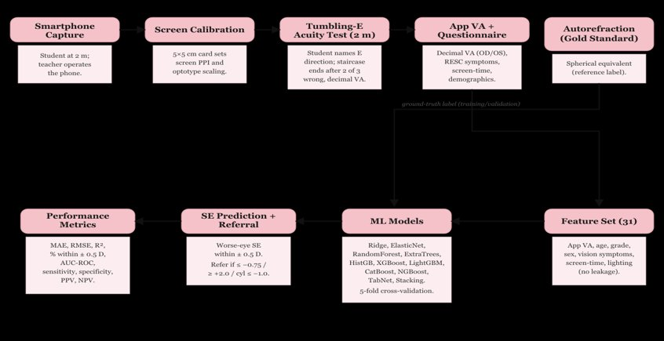
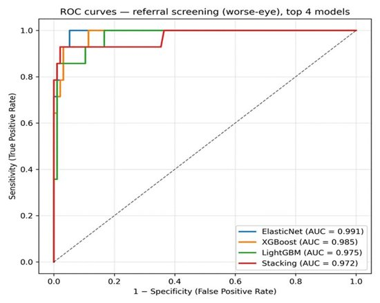

Development and internal validation of a smartphone-based, offline machine-learning model for refractive-error screening among rural high-school children in North Karnataka: a feasibility study
Study design. Observational cross-sectional study conducted in two rural high schools of Gadag district, North Karnataka (classes 8–10). Study period: 1 January 2026 to 30 June 2028.
Sample size. To detect a mean absolute error (MAE) of ≤0.1 D with 95% confidence, assuming σ = 0.5 D,3 using n = Z²σ²/d², the minimum required sample was 96. With a 10% dropout allowance, n = 110. Two schools were selected by lottery method and 55 participants recruited from each.
Participants. High-school children and teachers in the selected rural area willing to participate and able to follow app prompts. Children with blindness, ocular pathology (corneal opacity, dense cataract), recent ocular surgery (<6 months), or cognitive/physical inability to interact with a smartphone were excluded.
Study tools. Data were collected using a predesigned, pre-structured, and pretested questionnaire comprising: the Refractive Error Study in Children (RESC) instrument6 — a WHO-validated survey for children aged 5–15 years covering visual acuity, spectacle ownership, and barriers to use; the System Usability Scale (SUS)7 — a 10-item instrument yielding a 0–100 score where ≥68 denotes above-average usability; the Academic Stress Scale (ASS)8 — a 35-item psychometric tool quantifying academic stressors; and smartphone-based visual acuity testing together with sociodemographic profiling.
Digital visual acuity assessment. Participants underwent distance visual-acuity testing at a fixed 2 m distance. The screen was first calibrated against a known 5 cm × 5 cm reference card to compute pixels-per-inch and scale the tumbling-E optotypes. The child reported the orientation of each E; a correct response advanced to the next smaller optotype. The test terminated when the child failed two of three consecutive presentations, and the decimal visual acuity was recorded automatically.
Gold-standard refraction. Physician-administered Snellen visual acuity and spherical equivalent measured by autorefractor served as the ground-truth labels for model training.

Feature set. Thirty-one variables were used: smartphone-measured decimal visual acuity (right eye, left eye, worse eye, inter-eye difference), age, grade, sex, vision and aberration symptoms (blackboard visibility, distance face recognition, crowded-shelf and peripheral-vision difficulty, fine-task difficulty, depth perception, glare, starbursts, haloes, night-vision difficulty, dark adaptation, asthenopia, inter-ocular difference), screen-time, viewing distance, ambient lighting, sleep difficulty, classroom seating, and outdoor activity. Reference-standard measurements (Snellen acuity, pinhole acuity, autorefraction, WHO-app scores) and spectacle ownership were excluded to prevent information leakage.
Modelling algorithms. Eleven algorithms were trained: three pre-specified models (ridge regression, random forest, XGBoost) together with elastic-net, extra-trees, histogram-based gradient boosting, LightGBM, CatBoost, NGBoost, a TabNet deep-learning model, and a stacking ensemble.
Validation strategy. Five-fold cross-validation with out-of-fold prediction for every participant. Evaluation metrics: MAE, RMSE, R², proportion of predictions within ±0.5 D, AUC-ROC, sensitivity, specificity, PPV, and NPV. The deployment target is offline, on-device inference via TensorFlow Lite on low-cost Android phones; on-device deployment was not undertaken in the present feasibility study.
Software. Model development in Python (scikit-learn, XGBoost, LightGBM, CatBoost, NGBoost, PyTorch-TabNet; matplotlib for plotting). Descriptive, agreement, and diagnostic-accuracy statistics in SPSS version 21.
Statistical analysis. Data coded and entered in Microsoft Excel. Descriptive statistics reported as frequency, proportions, and mean ± SD. Categorical analysis by chi-square test. A two-sided p value of ≤0.05 was considered statistically significant.
Quality control and data security. Built-in input validation and screen-lock override during testing. Participant data were anonymised; stored with AES-256 encryption at rest and TLS in transit, with a secure linkage key for re-identification only during final analysis.
Ethical considerations. The study was conducted after Institutional Ethics Committee approval. Permission was obtained from schools and higher authorities. Informed written consent from parents or guardians, and assent from students in their language of understanding, were obtained for voluntary participation.
A total of 110 children were studied. Most were aged 14–15 years (60; 54.5%), followed by 12–13 years (26; 23.6%) and 16 years (24; 21.8%). Females (57; 51.8%) and males (53; 48.2%) were comparably represented. By the modified B.G. Prasad scale, the largest groups were class IV lower-middle (40; 36.4%) and class III middle (30; 27.3%).
| Age group (years) | Frequency (n) | Percent (%) |
|---|---|---|
| 12–13 | 26 | 23.6 |
| 14–15 | 60 | 54.5 |
| 16 | 24 | 21.8 |
| Total | 110 | 100.0 |
| Category | Frequency (n) | Percent (%) |
|---|---|---|
| Female | 57 | 51.8 |
| Male | 53 | 48.2 |
| Total | 110 | 100.0 |
| Category | Frequency (n) | Percent (%) |
|---|---|---|
| I — Upper | 1 | 0.9 |
| II — Upper Middle | 25 | 22.7 |
| III — Middle | 30 | 27.3 |
| IV — Lower Middle | 40 | 36.4 |
| V — Lower | 14 | 12.7 |
| Total | 110 | 100.0 |
Agreement between EyeScopeAI and physician Snellen acuity (worse eye) was statistically significant (Pearson χ² = 13.12, df = 1, p < 0.001). The application classified more eyes as impaired than the Snellen chart (76 vs 44); of 66 eyes recorded as normal on Snellen testing, 37 were flagged impaired by the app, indicating a conservative, sensitivity-favouring threshold. Mean decimal acuity was marginally lower with the app (0.75 ± 0.31) than with Snellen testing (0.84 ± 0.25).
| App | Snellen Normal, n (%) | Snellen Impaired, n (%) | Total | p value |
|---|---|---|---|---|
| Normal | 29 (85.3%) | 5 (14.7%) | 34 | Pearson χ² = 13.12, df = 1, p < 0.001 |
| Impaired | 37 (48.7%) | 39 (51.3%) | 76 | |
| Total | 66 | 44 | 110 |
| Snellen (Physician) | EyeScopeAI App |
|---|---|
| 0.84 ± 0.25 | 0.75 ± 0.31 |
The referral classifiers showed high discrimination, with areas under the ROC curve of 0.991 for elastic-net, 0.985 for XGBoost, 0.975 for LightGBM, and 0.972 for the stacking ensemble.

Against autorefraction, the elastic-net screening model correctly identified all 14 children requiring referral and misclassified 5 of 96 children not requiring referral, yielding a sensitivity of 100%, specificity of 94.8%, PPV of 73.7%, and NPV of 100% (Pearson χ² = 76.83, df = 1, p < 0.001). The mean worse-eye spherical equivalent was identical between methods (autorefraction −0.33 ± 0.92 D; predicted −0.33 ± 0.72 D), with strong agreement (Eta = 0.939; Eta² = 0.881).
| Predicted screen | Autorefractor Normal, n (%) | Autorefractor Impaired, n (%) | Total | p value |
|---|---|---|---|---|
| Normal | 91 (100%) | 0 (0%) | 91 | Pearson χ² = 76.83, df = 1, p < 0.001 |
| Impaired | 5 (26.3%) | 14 (73.7%) | 19 | |
| Total | 96 | 14 | 110 |
Sensitivity 100%, Specificity 94.8%, PPV 73.7%, NPV 100%.
| Autorefractor | EyeScopeAI (ElasticNet predicted SE) |
|---|---|
| −0.33 ± 0.92 D | −0.33 ± 0.72 D |
Across 11 algorithms, random forest provided the most accurate worse-eye spherical-equivalent estimate (MAE 0.364 D; 84.5% of predictions within ±0.5 D; R² 0.50). For the referral decision, elastic-net achieved the highest sensitivity (100%) while tree-ensemble models offered higher specificity.
| Model | MAE | RMSE | R² | Within ±0.5 D |
|---|---|---|---|---|
| RandomForest ★ | 0.364 | 0.651 | 0.496 | 84.5% |
| NGBoost | 0.376 | 0.613 | 0.553 | 83.6% |
| XGBoost | 0.378 | 0.655 | 0.490 | 79.1% |
| CatBoost | 0.384 | 0.685 | 0.443 | 80.0% |
| Stacking | 0.404 | 0.700 | 0.417 | 75.5% |
| ExtraTrees | 0.419 | 0.813 | 0.214 | 82.7% |
| TabNet | 0.463 | 0.944 | −0.059 | 80.0% |
| ElasticNet | 0.481 | 0.761 | 0.312 | 66.4% |
| HistGBR | 0.494 | 0.741 | 0.346 | 61.8% |
| LightGBM | 0.520 | 0.758 | 0.317 | 59.1% |
| Ridge | 0.549 | 0.815 | 0.211 | 59.1% |
★ Best estimation model by MAE and proportion within ±0.5 D.
| Model | MAE | RMSE | R² | Within ±0.5 D |
|---|---|---|---|---|
| RandomForest ★ | 0.305 | 0.642 | 0.421 | 87.3% |
| CatBoost | 0.310 | 0.629 | 0.444 | 88.2% |
| NGBoost | 0.313 | 0.640 | 0.425 | 87.3% |
| XGBoost | 0.326 | 0.632 | 0.439 | 84.5% |
| Stacking | 0.339 | 0.645 | 0.415 | 84.5% |
| ExtraTrees | 0.341 | 0.752 | 0.206 | 88.2% |
| ElasticNet | 0.419 | 0.713 | 0.286 | 74.5% |
| TabNet | 0.439 | 1.093 | −0.678 | 84.5% |
| HistGBR | 0.450 | 0.679 | 0.351 | 67.3% |
| LightGBM | 0.459 | 0.686 | 0.338 | 67.3% |
| Ridge | 0.481 | 0.754 | 0.202 | 66.4% |
| Model | MAE | RMSE | R² | Within ±0.5 D |
|---|---|---|---|---|
| RandomForest ★ | 0.297 | 0.517 | 0.630 | 87.3% |
| NGBoost | 0.295 | 0.470 | 0.694 | 86.4% |
| XGBoost | 0.296 | 0.503 | 0.650 | 83.6% |
| Stacking | 0.324 | 0.538 | 0.600 | 83.6% |
| CatBoost | 0.326 | 0.552 | 0.579 | 83.6% |
| ExtraTrees | 0.355 | 0.651 | 0.413 | 82.7% |
| TabNet | 0.346 | 0.621 | 0.466 | 81.8% |
| ElasticNet | 0.436 | 0.640 | 0.434 | 69.1% |
| LightGBM | 0.470 | 0.678 | 0.364 | 66.4% |
| HistGBR | 0.464 | 0.675 | 0.369 | 62.7% |
| Ridge | 0.508 | 0.699 | 0.323 | 60.9% |
| Model | Sens. | Spec. | PPV | NPV | AUC | TP | FP | FN | TN |
|---|---|---|---|---|---|---|---|---|---|
| ElasticNet ★ | 100% | 94.8% | 0.737 | 1.000 | 0.991 | 14 | 5 | 0 | 91 |
| LightGBM | 92.9% | 90.6% | 0.591 | 0.989 | 0.975 | 13 | 9 | 1 | 87 |
| HistGBR | 92.9% | 93.8% | 0.684 | 0.989 | 0.969 | 13 | 6 | 1 | 90 |
| Stacking | 92.9% | 97.9% | 0.867 | 0.989 | 0.972 | 13 | 2 | 1 | 94 |
| Ridge | 85.7% | 89.6% | 0.545 | 0.977 | 0.969 | 12 | 10 | 2 | 86 |
| TabNet | 85.7% | 97.9% | 0.857 | 0.979 | 0.913 | 12 | 2 | 2 | 94 |
| RandomForest | 78.6% | 97.9% | 0.846 | 0.969 | 0.950 | 11 | 2 | 3 | 94 |
| CatBoost | 78.6% | 100% | 1.000 | 0.970 | 0.927 | 11 | 0 | 3 | 96 |
| XGBoost | 78.6% | 96.9% | 0.786 | 0.969 | 0.985 | 11 | 3 | 3 | 93 |
| ExtraTrees | 71.4% | 97.9% | 0.833 | 0.959 | 0.968 | 10 | 2 | 4 | 94 |
| NGBoost | 71.4% | 96.9% | 0.769 | 0.959 | 0.968 | 10 | 3 | 4 | 93 |
★ Best referral model by sensitivity and AUC. Referral criterion: worse-eye SE ≤ −0.75 D, ≥ +2.0 D, or cylinder ≤ −1.0 D.
In this feasibility study, an offline smartphone-based machine-learning model estimated the spherical equivalent of refractive error within ±0.5 D of autorefraction in the majority of children and, when applied as a referral screen, identified those requiring ophthalmic evaluation with high sensitivity. The best-performing estimation model (random forest) achieved an MAE of 0.36 D with 84.5% of predictions within ±0.5 D, whereas the referral classifier (elastic-net) attained a sensitivity of 100% and an NPV of 100% against the gold standard. These findings indicate that lightweight, on-device AI can extend refractive-error screening to schools through non-specialist administrators without specialist equipment or internet connectivity.
The accuracy of spherical-equivalent estimation was comparable to previously reported ML models. Du et al. — using ocular biometric inputs to predict cycloplegic SE in Chinese school children — reported an MAE of 0.37–0.44 D with 77–83% within ±0.5 D.14 Our model achieved a similar MAE (0.36 D) and a marginally higher proportion within ±0.5 D (84.5%), despite relying solely on smartphone-measured visual acuity and questionnaire responses rather than on biometric measurements such as axial length. The lower R² (0.50 vs 0.89–0.93 in biometry-based models) was expected, as visual acuity carries less direct optical information than ocular biometry; the clinically relevant ±0.5 D agreement target was nonetheless met.
The EyeScopeAI application showed moderate agreement with physician Snellen acuity (χ² = 13.12, p < 0.001), tending to classify more eyes as impaired. A comparable pattern was reported by Raffa et al., whose "Smart Optometry" application detected subnormal visual acuity with a sensitivity of 89.3% but showed systematic differences from conventional charts.13 This conservative behaviour — favouring sensitivity over specificity — is desirable in a screening context where missing a child with genuine visual deficit carries greater cost than a false alarm.
For the referral decision, the model achieved an AUC of 0.991 with perfect sensitivity, exceeding the diagnostic performance reported for several smartphone-based screening tools. The proportion of children meeting referral criteria (12.7%) was consistent with the prevalence of refractive error reported among Indian school children.12 The non-cycloplegic threshold of −0.75 D adopted here corresponds to the standard cycloplegic definition of −0.50 D for myopia in Indian children9 and to the optimal non-cycloplegic referral cut-off for the 13–15-year age group.10
By embedding visual-acuity testing, a brief questionnaire, and automated referral logic within a single offline application, the workflow can be delivered by schoolteachers or accredited social health activists during routine school hours, reducing dependence on specialist personnel and urban clinics. This aligns with the objectives of the National Programme for Control of Blindness and Visual Impairment.
Strengths include the use of autorefraction as an objective reference standard, comparison of multiple contemporary algorithms within a cross-validated framework reported in accordance with TRIPOD and STARD recommendations, and the generation of out-of-fold predictions that minimise optimistic bias. Limitations include internal validation within a single district, a modest sample, and a small number of referral-positive children — the apparently perfect sensitivity should therefore be interpreted with caution. Refraction was assessed without cycloplegia, and only distance acuity was measured. External and temporal validation in independent, prospectively recruited cohorts is required before programmatic recommendation.
| Reference | Method / Classifier | Population | Key performance |
|---|---|---|---|
| Raffa et al. (2022)13 | Smartphone VA app (Smart Optometry) | Children <18 y, Saudi Arabia | Sensitivity 89.3% for subnormal VA |
| Du et al. (2023)14 | ML (biometry-based SE prediction) | School children, China | MAE 0.37–0.44 D; 77–83% within ±0.5 D |
| Gopalakrishnan et al. (2021)9 | Open-field autorefraction (threshold) | Children 5–15 y, South India | SE ≤ −0.75 D non-cycloplegic ≡ −0.50 D cycloplegic |
| Present study | ML (app VA + questionnaire) | High-school children, North Karnataka | RF: MAE 0.36 D, 84.5% within ±0.5 D; referral (elastic-net) sensitivity 100%, specificity 94.8%, AUC 0.991 |